原文连接:https://www.cnblogs.com/Purgeyao/p/11511579.html
代码质量检测(SonarQube)整合中文版+阿里P3C
简介
SonarQube是一种自动代码审查工具，用于检测代码中的错误，漏洞和代码异味。它可以与您现有的工作流程集成，以便在项目分支和拉取请求之间进行连续的代码检查。
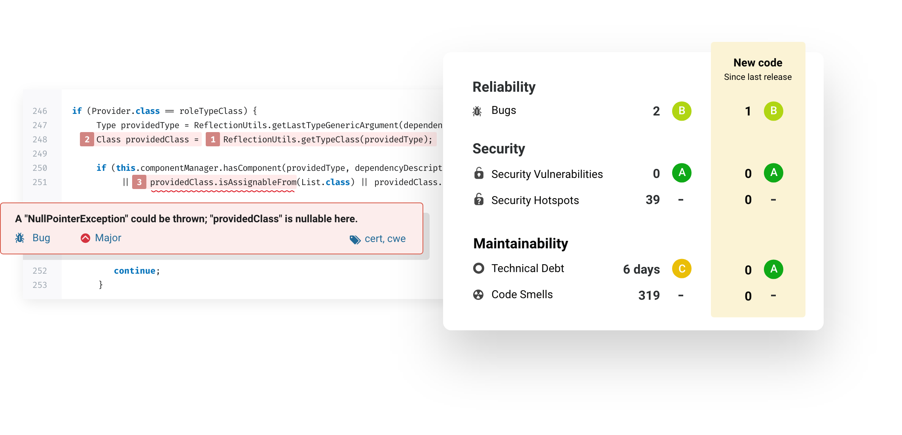
连续代码检查,sonar可以单独使用Maven、Gradle推送代码检查，当然也可以在ci引擎进行代码自动检查，如: Jenkins、Git 。
服务端
安装
为了快速启动sonarqube实例，我们采用docker的方式。
sonarqube默认为英文版的，检查规则为自带的，我们这里采用中文汉化，另外java语言加入阿里p3c规则。
使用git克隆项目：
git clone https://github.com/purgeteam/sonarqube-start
cd docker-startsonar-docker-start.yml 模板如下：
# 汉化版+阿里p3c验证
version: "2"
services:
sonarqube:
image: sonarqube
ports:
- "9000:9000"
networks:
- sonarnet
environment:
- sonar.jdbc.url=jdbc:postgresql://db:5432/sonar
volumes:
- sonarqube_conf:/opt/sonarqube/conf
- sonarqube_data:/opt/sonarqube/data
- sonarqube_extensions:/opt/sonarqube/extensions
- sonarqube_bundled-plugins:/opt/sonarqube/lib/bundled-plugins
- ./plugin/rhinoceros/sonar-pmd-plugin-3.2.0-SNAPSHOT.jar:/opt/sonarqube/extensions/plugins/sonar-pmd-plugin-3.2.0-SNAPSHOT.jar
- ./plugin/sonar-l10n-zh-plugin-1.16.jar:/opt/sonarqube/extensions/plugins/sonar-l10n-zh-plugin-1.16.jar
db:
image: postgres
ports:
- "5432:5432"
networks:
- sonarnet
environment:
- POSTGRES_USER=sonar
- POSTGRES_PASSWORD=sonar
volumes:
- ./postgres/postgresql:/var/lib/postgresql
- ./postgres/postgresql_data:/var/lib/postgresql/data
networks:
sonarnet:
driver: bridge
volumes:
sonarqube_conf:
sonarqube_data:
sonarqube_extensions:
sonarqube_bundled-plugins:
postgresql:
postgresql_data:使用docker-compose启动
docker-compose -d sonar-docker-start.yml up默认会吧插件挂载进容器内部。
启动ok，查看控制台进行访问localhost:9000,默认账号密码：admin/admin。
默认规则配置
虽然已经集成了阿里P3C,但是使用的还是默认规则，这里我们需要设置为指定规则。
以admin账号登陆
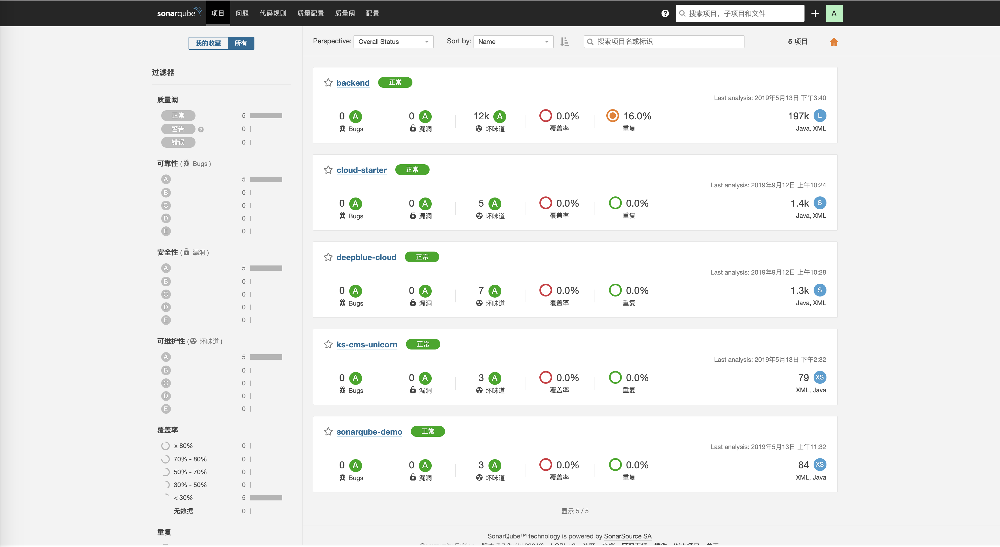
打开 质量配置profiles页，点击右上方的创建按钮，创建 p3c profiles
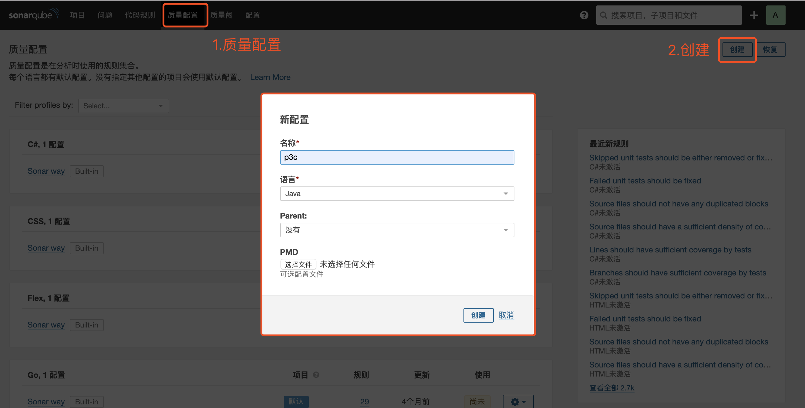
首次创建会跳转到代码规则配置页面，刚新建的 profile 是没有激活任何规则的，需要手动激活
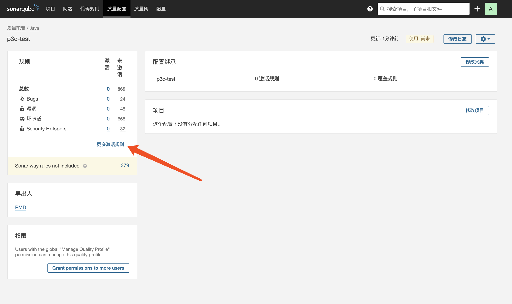
我们需要为刚创建的 p3c profile 激活 p3c 规则，点击【激活更多规则】
跳转到激活页面,搜索p3c，如图，都是以[p3c]开头的规则。
整合中文版+阿里P3C4.png)
批量修改->活动 p3c -> 应用 -> 成功
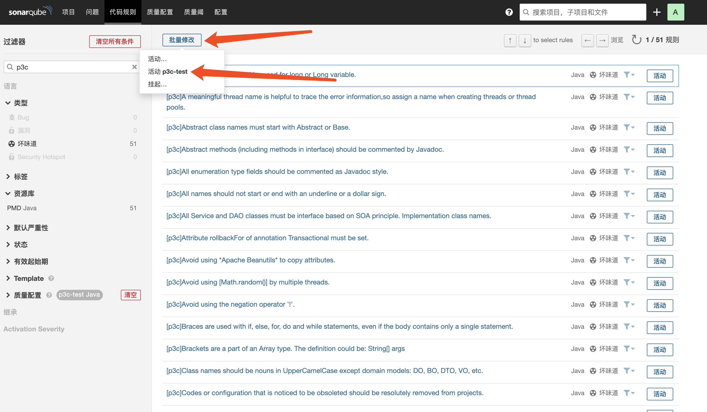
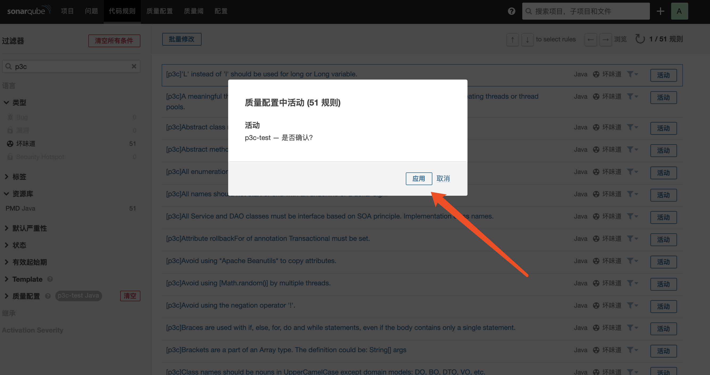
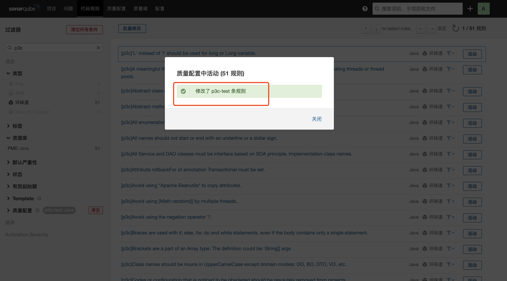
绑定规则成功后基本完成，我们返回质量配置，在java选择刚设置的p3c设置为默认。
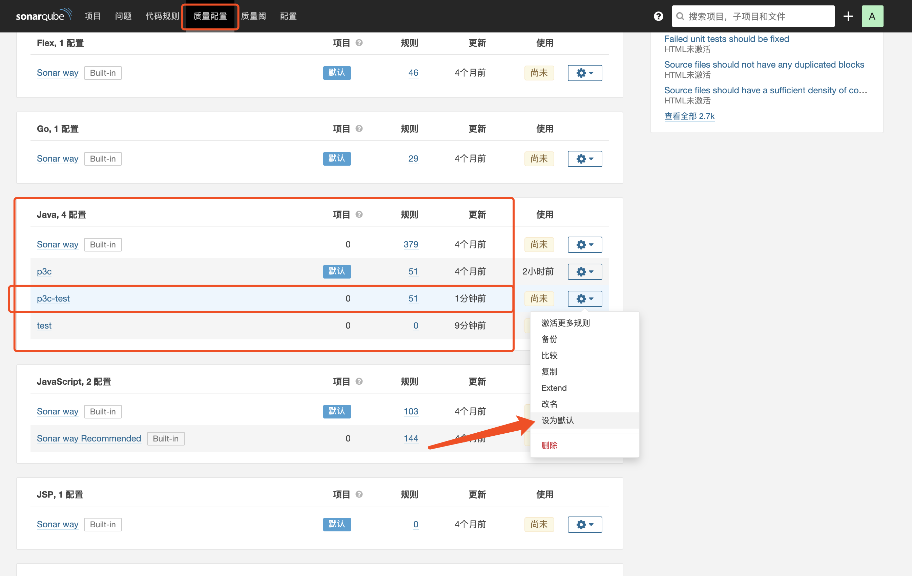
配置阿里P3C已经完成。
Maven代码检查
sonarqube可以使用多种方式进行代码上传检查。
我们使用简单的Maven触发代码检查。
添加插件
在项目pom文件里添加sonar-maven-plugin插件。
<build>
<plugins>
<plugin>
<groupId>org.sonarsource.scanner.maven</groupId>
<artifactId>sonar-maven-plugin</artifactId>
<version>3.6.0.1398</version>
</plugin>
</plugins>
</build>服务器相关配置:
需要将<sonar.host.url>修改为之前搭建的sonarqube服务地址。
<!-- SonarQube代码质量检测 -->
<profiles>
<profile>
<id>sonar</id>
<activation>
<activeByDefault>true</activeByDefault>
</activation>
<properties>
<sonar.host.url>http://127.0.0.1:9000/</sonar.host.url>
</properties>
</profile>
</profiles>触发检查
pom配置完成，先将代码进行构建使用Maven package 命令。
完成构建执行mvn sonar:sonar命令，也可以使用idea maven 可视化界面进行操作。
整合中文版+阿里P3C9.png)
运行完成。
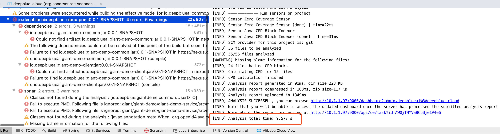
查看sonar报告
打开sonar服务页面127.0.0.1:9000
整合中文版+阿里P3C11.png)
可以看到上传的项目列表，选择项目查看分析结果，项目健康状态等信息。
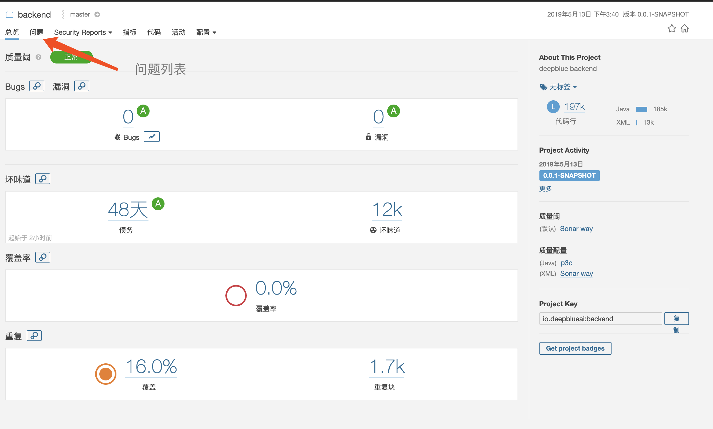
问题里可以看到相关的代码问题列表，打开单个则查看详情。
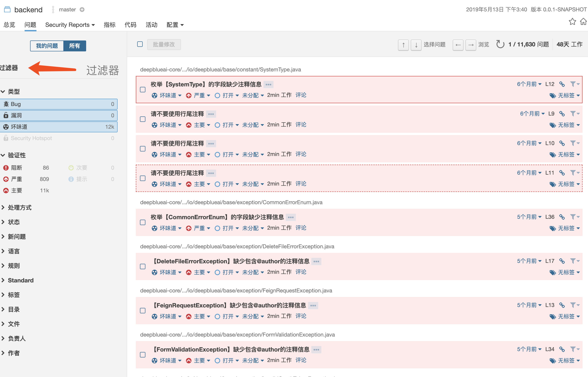
总结
当然我们只是使用了简单的Maven方式推送至SonarQube服务，当然也可以在ci引擎进行代码自动检查，如: Jenkins、Git，自动化检查，有兴趣的小伙伴也可以了解下其他功能，SonarQube官网。
示例代码地址: sonarqube-start
作者GitHub:
Purgeyao 欢迎关注